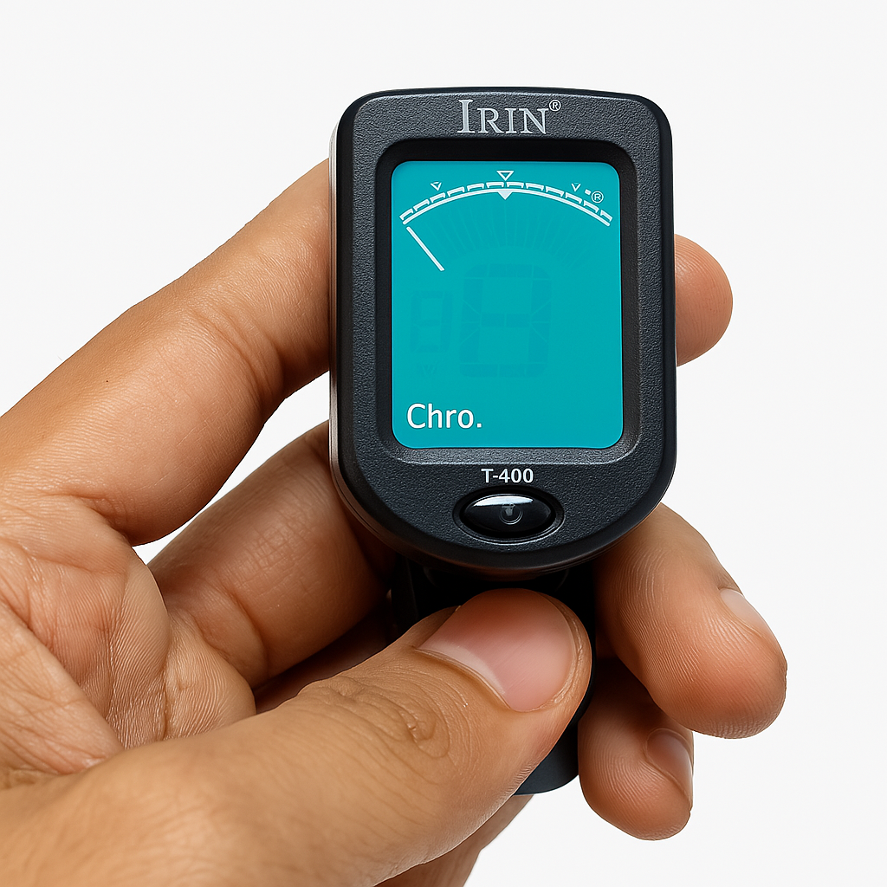
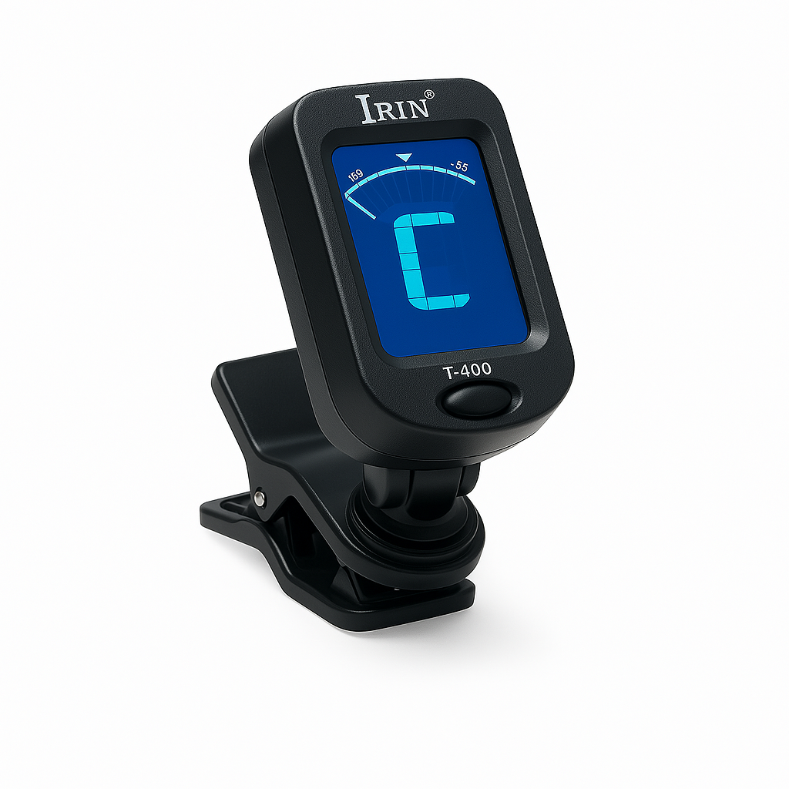
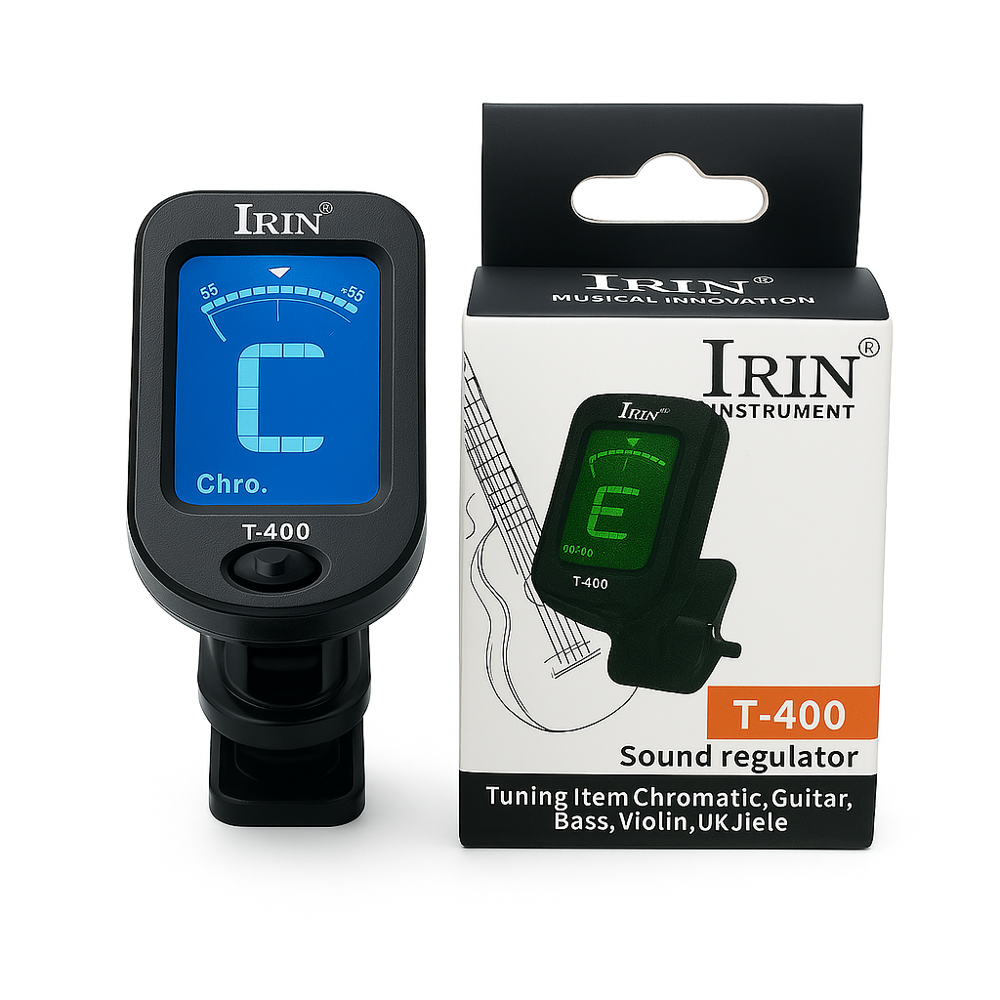
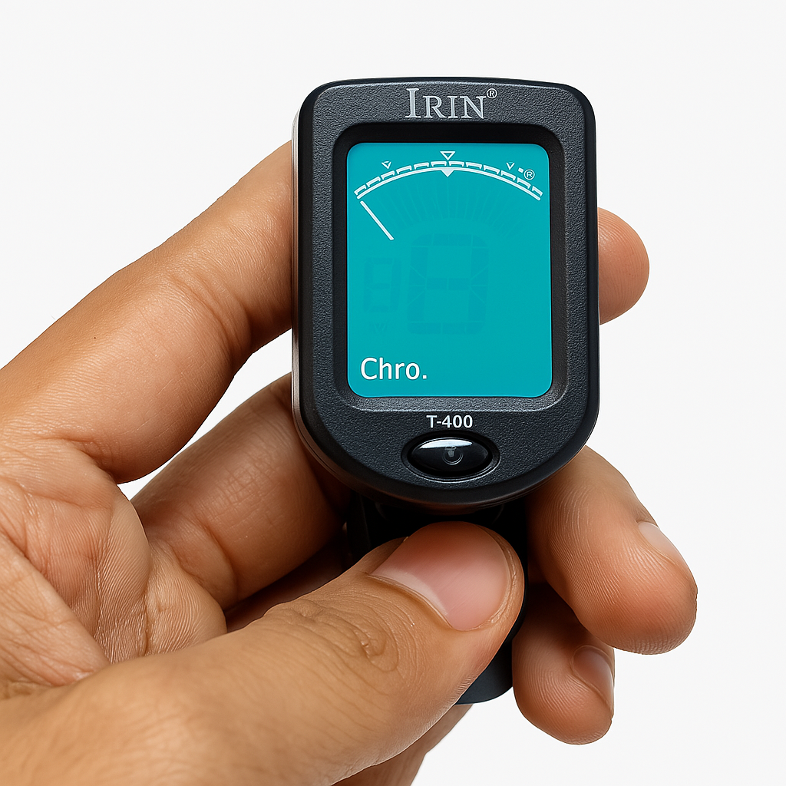
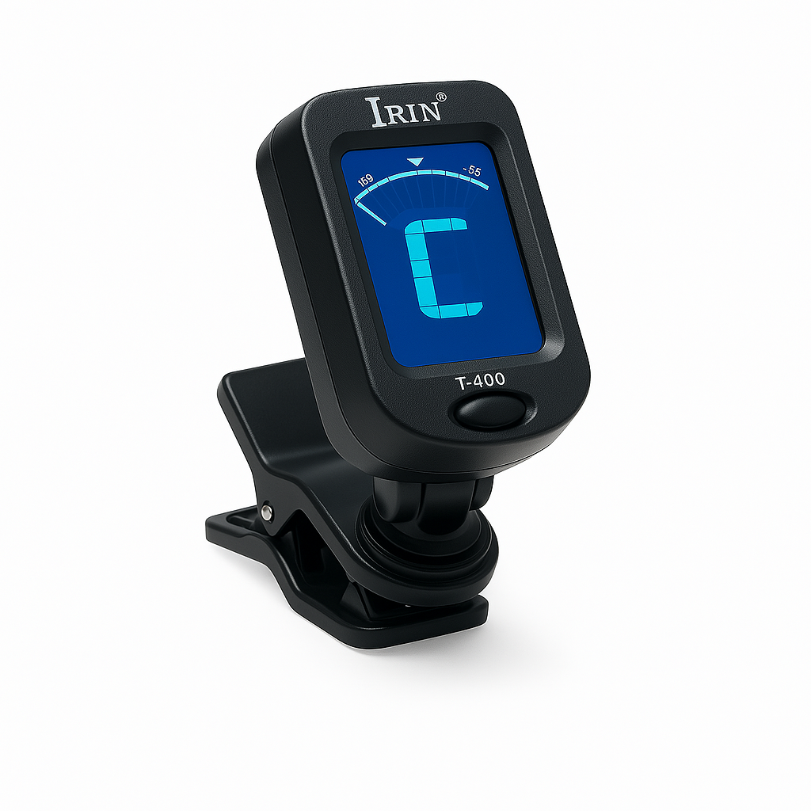
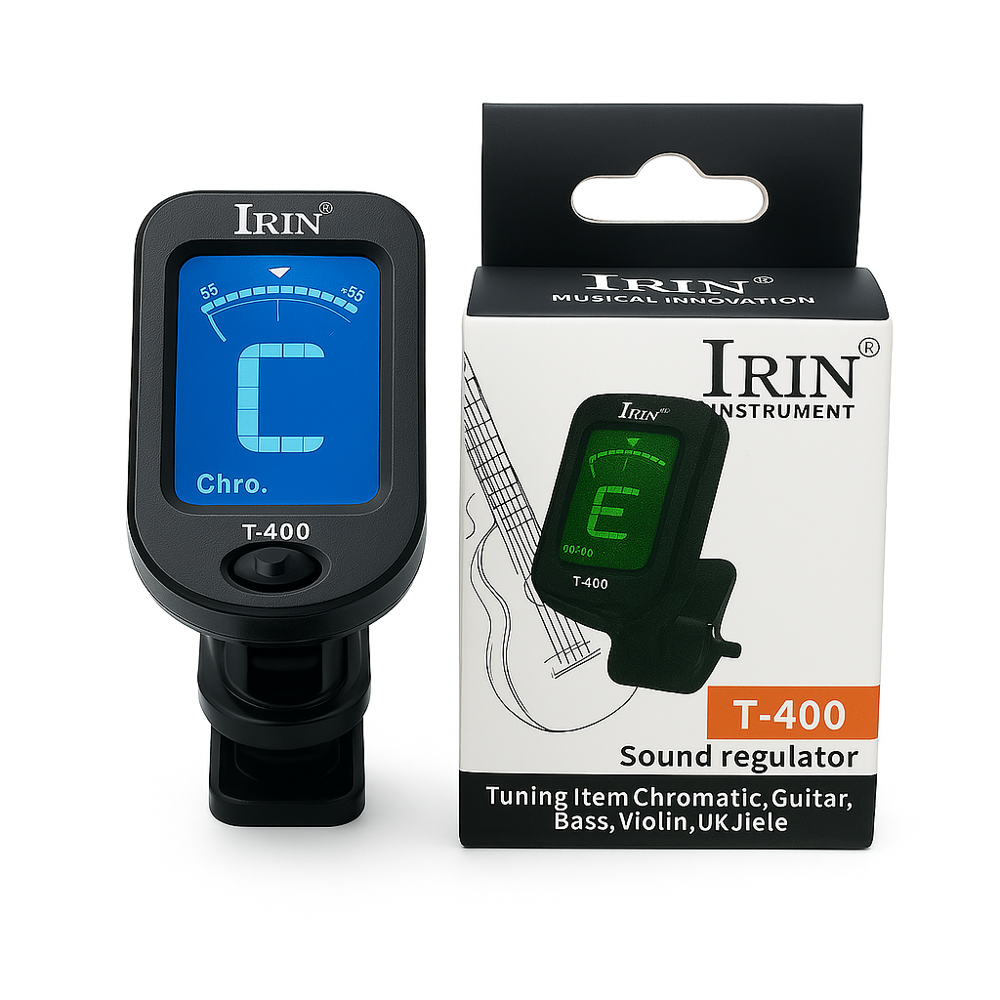

Afinador Irin T-400
 





C$ 580
El afinador Irin T-400 es compacto, preciso y fácil de usar. Compatible con guitarra, bajo, ukelele y violín. Cuenta con pantalla de alta visibilidad, clip giratorio y modos cromáticos para una afinación rápida y confiable. Ideal para músicos en movimiento.
Comprar por WhatsApp ← Volver al catálogo